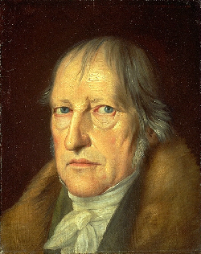

ドイツ観念論の哲学者。近代哲学の完成者。

ヘーゲル。
画像はパブリックドメイン。
自分の書いたブログ「わたしの名はフレイ」2020/09/07より。
ヘーゲルは、ドイツ観念論の哲学者で、近代哲学の完成者として知られる。
テーゼAとアンチテーゼBからジンテーゼCが生まれるという「弁証法」が有名だが、彼の著作「精神現象学」は、一見理解できないことを言っているように見えて、人生において多くを考えた哲学者が見ると、「人間の分かることや知りえることや考えられること全部が正しく書いてある」、面白い「人生と青春の教科書」である。
その内容は、自我や自己意識の発達から、「自らのエゴが自由の中でどのように形成されていくのか」ということから始まり、人間が環境と繋がっていて、心理学が環境から作用的に生み出されていって、恋愛と必然性から、心胸の法則（自らの理想はこうなんだと世界に発信するが、世界から受け入れられない）とか、徳の騎士（自らが正義の徳であり、世間を正そうとするが、逆に相手が正義であるため失敗する）とか、あるいは事そのもの（どんな個人のする事も、その事自体に意味があり、批判できない）など、意外と人間味あふれる人生論のようなことを言っている。
また、歴史論について言えば、客観性、信仰、啓蒙、有用性、絶対自由、道徳性、神、そして良心など、人生において少しずつ分かっていく「人の社会性の形成過程」のようなことが書かれている。
僕は、そうしたヘーゲルの哲学が、「自分の人生と重なるところがある」ため、とても面白かった。
ヘーゲルは、この世界全体の発展を「世界精神」だと考えて、その精神がいかにして発展をしていくかを考えた。
後日注記：ヘーゲルは、精神と意識の成長と変転を考える。自我が成長し、世界と対面し、根源的かつ本質的に考えながら、世界を見つめ、自分の愚かさを克服し、「真実」を知っていきながら、心と世界を照らしわせて、真理へと目覚めていく過程、そうした哲学をヘーゲルは考えた。
ヘーゲルは弁証法で有名だが、弁証法は、「意見Aに対して批判的なBがあり、それが統合されてCが出来て、その上でCに対して批判的なDがあり、それが続いていく」と言うものだ。
ヘーゲルは弁証法を歴史に応用し、精神の段階を「合一から絶対に至る」ものとした。
ヘーゲルは、歴史を弁証法的な、絶対精神へと向かっていく世界精神の目覚めだと考えた。
ヘーゲルの精神論は、自己意識が喪失や確執とともに大人になっていき、共同性に目覚め、啓蒙や理性主義へと発展して、最後は道徳的良心と言う「絶対知」に到達する、と言うものだ。
ヘーゲルの国家論では、絶対主義のプロイセンを最終的な理想・終着点だと考える。
その思想は全体主義的で、集団は国家のためにあり、集団の全員より国家の方が大きい、とするものだが、当時はそれが進んだ考え方だった。
僕は、ヘーゲルは「エゴ」すなわち「自我」の絶対的段階と変転の過程を書きたかったのだと思います。
ヘーゲルは、「自己意識」から始まり、精神の成長と歴史を通じて「心胸の法則」を作ったり「徳の騎士」となったりし、最後には絶対知である「良心」に行きつきます。
ヘーゲルは、まさにエゴがどのように変転していくか、ということを、歴史になぞらえて、絶対過程にしたのです。
僕は、ヘーゲルは「自分が形作られていく過程」について書きたかったのではないかと思う。
人間は、人生の中でさまざまな不安や恐れを抱き、そこから人々に対して行動し望むようになるが、そうした不安や恐れは「アイデンティティの喪失」であり、人々が相互に攻撃や争いを行うのは、「アイデンティティが欠如しているから」が理由である。
そんな中でも、その人はさまざまな経験を積んで、この世界のアイデンティティを「理想と現実を知ることから自らアイデンティティを構築する」ことを目指すようになる。
そして、さまざまな「発想」が体験と理性の経験から「確信」へと変わっていく。それが、そのまま「高い境地」へと向かって、まっすぐに歩んでいく。
ヘーゲルは、アイデンティティが欠如した人間を想定して、その人間がどのような段階と経緯を経て高みへと至るのか、その上でその人間はこの世界をどのような世界であるとみなすのか、ということを書きたかったのではないかと思う。まさに、「自分の精神が形作られていく過程」を書いたのである。
そう、ヘーゲルは「自由という社会の理想の中で自らがどのように考えるのか」という、「社会に対しての自分の行動論・行動史」を書いただけである。そこに、「この世界を全て理解するプロセス」がある。それはまるで「気付きと驚きが疑いから確信へと変わっていく過程」であると言える。
ヘーゲル哲学の賢い点は、歴史と人生の進歩の過程が、そのまま弁証法に重なるところがある、ということ。
ヘーゲルの記述の全ては弁証法的な過程であり、精神と社会の歴史が、弁証法の流れにそって、次元を超越して絶対的に進歩していくこと、それをヘーゲルは考えたのです。
「超解読！はじめてのヘーゲル『精神現象学』（竹田青嗣・西研）」より引用。
“言いかえると、魂（ゼーレ）が己れの本性によってあらかじめ設けられている駅々としての己れの一連の形態を遍歴してゆき、己れ自身をあますところなく完全に経験し、己れが本来己れ自身においてなんであるかについての知に到達して、精神（ガイスト）にまで純化させられるさいの魂の道程であると、この叙述はみなされることができるのである”―ヘーゲル
“事そのものは、(1)その存在が、個別的な個人の行為でありすべての個人の行為であるような、一つの本質（実在）であり、(2)その行為がただちに他に対してある、すなわち一つの事であり、この事は、万人のまた各人の行為としてある。さらに(3)あらゆる本質の本質であり、精神的な本質であるような本質、である”―ヘーゲル
“したがって、この断言が断言しているのは、意識は自分の信念が本質であることについて信念をもっているということである”
“この断言という言明が、それ自身において自己の特殊性という形式を撤廃する所以のものであり、自己は言明することにおいて自己にとって必然的な必要な普遍性を承認している”
“美しい魂と呼ばれるひとつの不幸な魂の光輝は内面において次第に消え失せて行き、そうしてこの魂は空中に失せる形のさだかでない靄のようになって消え去るのである”―ヘーゲル
「精神現象学」、「法の哲学」、など。
ドイツ観念論の哲学者の一人で、近代哲学の完成者とされています。精神現象論で、「この世界全体を精神だと見た時、その精神がどのように変貌を遂げていくか」を考えました。また、社会哲学の貢献でも有名です。
Wikipedia
Wikisource
書籍
以下の書籍が参考になります。